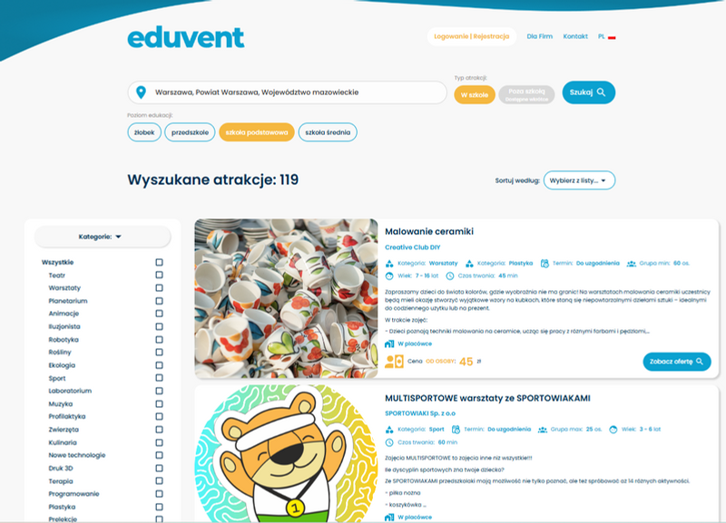
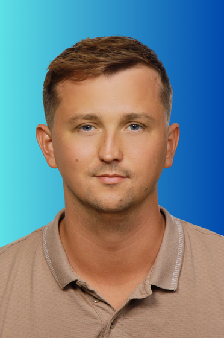
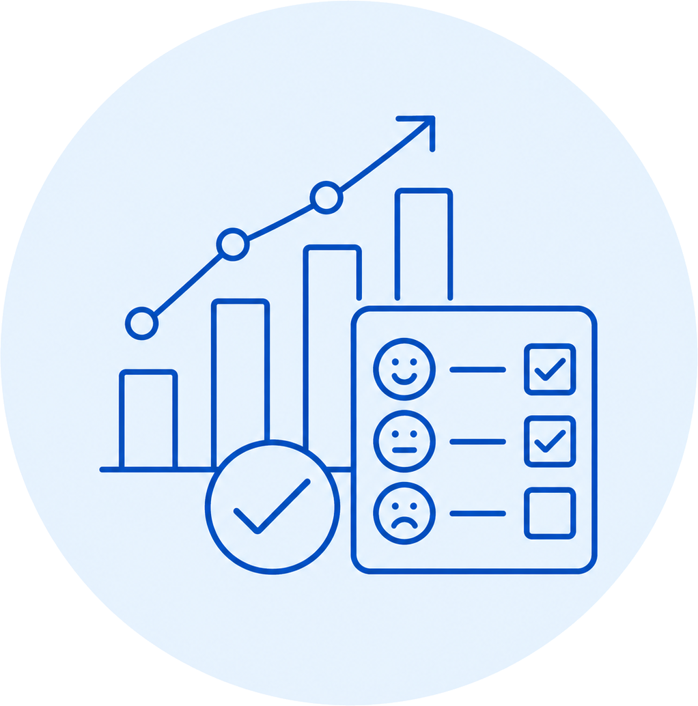
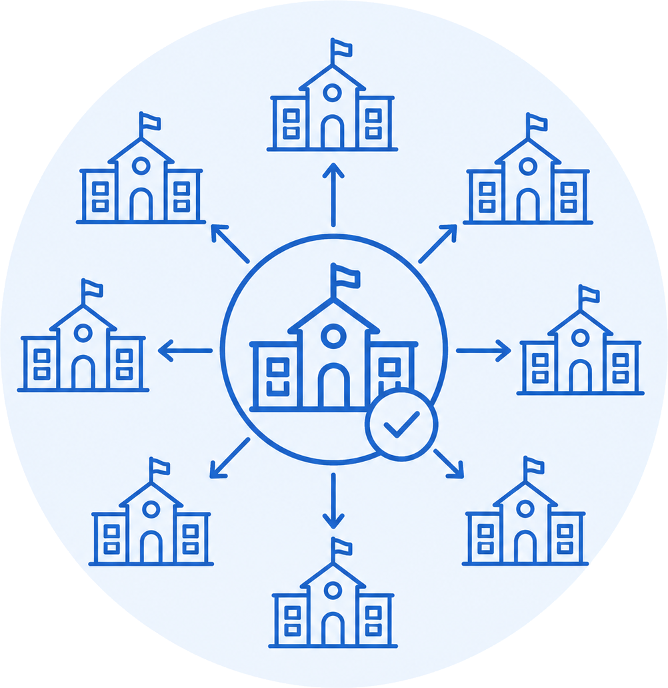

Pierwsza platforma do rezerwacji
wydarzeń edukacyjnych
Łączymy szkoły i przedszkola z organizatorami warsztatów, spektakli i zajęć edukacyjnych. Korzystanie z platformy jest bezpłatne dla placówek.
Rozproszenie ofert
Nauczyciele szukają po internecie, social mediach i poleceniach. Brak jednego zaufanego źródła.
Weryfikacja jakości
Nie wiadomo, kogo się zamawia. Brak systemu opinii, ocen i weryfikacji organizatorów.
Czasochłonny proces
Telefony, maile, ustalenia terminów i cen. Organizacja jednego wydarzenia to godziny pracy.
Jak Eduvent upraszcza organizację wydarzeń
Od wielu kontaktów do jednego, przejrzystego procesu
DZIŚ
Każdy nauczyciel samodzielnie szuka organizatorów, kontaktuje się z nimi i porównuje niepełne oferty.
- wiele telefonów i wiadomości
- brak jednego miejsca z ofertami
- czasochłonne porównywanie warunków
Z EDUVENTEM
Nauczyciel znajduje odpowiednią ofertę, wysyła zapytanie i zarządza organizacją wydarzenia w jednym miejscu.
- uporządkowana baza ofert
- łatwe porównanie możliwości
- prostszy kontakt i rezerwacja
Efekt dla miasta: łatwiejszy dostęp szkół do lokalnej oferty edukacyjnej i mniej pracy organizacyjnej po stronie nauczycieli.
Jak szkoła znajduje i rezerwuje wydarzenie
Cały proces organizacji — od wyszukania oferty do rezerwacji — w jednym miejscu

Przejrzyste wyszukiwanie i porównywanie ofert
Znajdź odpowiednią ofertę
Wyszukiwanie według lokalizacji, kategorii, grupy wiekowej i rodzaju wydarzenia.
Porównaj dostępne propozycje
Opis, cena, termin, czas trwania i najważniejsze warunki — wszystko w jednym widoku.
Zarezerwuj i zarządzaj organizacją
Kontakt z organizatorem, potwierdzenie ustaleń i obsługa rezerwacji w jednym panelu.
Oferta obejmuje m.in. teatr, warsztaty, robotykę, sport, profilaktykę, ekologię i muzykę — dla placówek na każdym etapie edukacji.
Na każdym etapie nauczyciel ma pełne wsparcie Eduvent — od pomocy w wyborze oferty, przez kontakt z organizatorem, po obsługę rezerwacji i rozliczenie.
Pierwszy rok Eduventu w liczbach
Rok szkolny 2025/2026
Zbudowany ekosystem
Potwierdzone zainteresowanie
100% pozytywnych opinii
Wszystkie otrzymane opinie od placówek i organizatorów były pozytywne.
100+ placówek
zainteresowanych współpracą w kolejnym roku szkolnym.
Platforma została wykorzystana do realnej organizacji wydarzeń edukacyjnych — nie jest tylko katalogiem ofert.
Skala rynku i potencjał dla Wrocławia
Sektor edukacji i wydarzeń dodatkowych
Skala systemu w Polsce
Popyt i wydatki
72% dzieci
uczestniczy w płatnych zajęciach i wydarzeniach dodatkowych organizowanych w szkole i poza nią. Tendencja wzrostowa od 2013 roku.
629 zł / miesiąc
średni wydatek rodziców na zajęcia dodatkowe na jedno dziecko w roku szkolnym 2023/2024.
2 261 zł / rok
średni koszyk zakupowy na wydarzenia edukacyjne we Wrocławiu.
Źródła: GUS 2025/2026, Raport o stanie Gminy Wrocław 2025, SIO, CBOS 2023/2024, dane Eduvent.
Nasz zespół

Co możemy zrobić dla miasta
Trzy konkretne kierunki współpracy ze szkołami i lokalnym środowiskiem edukacyjnym
Na start proponujemy działania, które można wdrożyć niezależnie lub połączyć w szerszy program miejski.
Warsztaty
profilaktyczne
Cykle bezpłatnych lub współfinansowanych zajęć dla uczniów, nauczycieli i rodziców.
Program korzyści
dla szkół
Model współpracy, dzięki któremu część wartości generowanej przez platformę wraca do placówek.
Miejskie projekty
edukacyjne
Koncepcje wydarzeń, konkursów i inicjatyw angażujących szkoły z lokalnych partnerów.
Program warsztatów dla wrocławskich placówek
Kompetencje cyfrowe, bezpieczeństwo i dobrostan uczniów
Dwa uzupełniające się obszary działań, które można wdrożyć pod patronatem miasta lub połączyć w szerszy program dla placówek.
AI i kompetencje cyfrowe
Praktyczne warsztaty przygotowujące uczniów i kadrę pedagogiczną do odpowiedzialnego korzystania z nowych technologii.
Przykładowe moduły:
sztuczna inteligencja — szanse, ograniczenia i ryzyka
krytyczna ocena informacji i rozpoznawanie manipulacji
cyberbezpieczeństwo i higiena cyfrowa
AI w pracy nauczyciela
edukacja i rozwój zawodowy w świecie AI
Profilaktyka i dobrostan
Warsztaty odpowiadające na najczęstsze problemy społeczne i wychowawcze zgłaszane przez placówki.
Przykładowe moduły:
hejt i przemoc rówieśnicza
zdrowie psychiczne i reagowanie na kryzysy
profilaktyka uzależnień
bezpieczeństwo w kontaktach z obcymi
tolerancja, relacje i odpowiedzialność społeczna
Proponowany model współpracy: Eduvent przygotowuje program i organizuje realizację • miasto obejmuje patronatem i pomaga dotrzeć do placówek • wspólnie szukamy źródeł finansowania
Odniesienie: MEN — „Cyfrowy Uczeń" 2025–2029; kierunki polityki oświatowej 2025/2026 dotyczące higieny cyfrowej, bezpieczeństwa w sieci i odpowiedzialnego wykorzystania AI.
Gotowe projekty edukacyjne dla miasta
Dwa formaty łączące edukację cyfrową, aktywność uczniów i promocję Wrocławia
Projekty mogą działać jako jednorazowe wydarzenia pod patronatem miasta lub jako cykl dla wybranych placówek.
„AI Detektywi"
Gra miejska lub szkolny escape room
Na czym polega?
Uczniowie rozwiązują sprawę związaną z cyfrowym zagrożeniem: deepfake'em, phishingiem, fałszywym profilem, zmanipulowanym materiałem albo próbą wyłudzenia danych.
Wartość dla miasta
Praktyczna edukacja cyfrowa zamiast pogadanki: rozgrywka, finał, dyplomy, prezentacja wyników i patronat miasta.
„AI dla mojego miasta"
Konkurs na pomysły rozwiązujące lokalne problemy
Na czym polega?
Zespoły uczniowskie projektują odpowiedzialne zastosowania AI dla Wrocławia: transportu, zieleni, bezpieczeństwa, dostępności, pomocy seniorom lub komunikacji z mieszkańcami.
Wartość dla miasta
Uczniowie pracują na realnych wyzwaniach miasta, a finał można zorganizować z udziałem ekspertów, władz i lokalnych mediów.
Dwa różne formaty, wspólny efekt: uczniowie nie tylko zdobywają wiedzę, ale wykorzystują ją do działania.
Odniesienie: CYBERTRON 2025 — grywal.sesja z cyberbezpieczeństwa; Digital Wizards 2025/2026 — konkurs obejmujący AI i higienę cyfrową; Olimpiada AI we Wrocławiu.
Pilotaż i mierzalny efekt dla miasta
Każde działanie kończy się podsumowaniem wyników i rekomendacjami
Od pierwszej edycji projekt można prowadzić w sposób uporządkowany: wdrożyć, zmierzyć, podsumować i zdecydować o skalowaniu.
Pilotaż
Realizacja warsztatu lub projektu w wybranej grupie wrocławskich placówek.

Pomiar
Frekwencja, liczba uczestników, oceny nauczycieli i zainteresowanie tematami.
Raport
Zasięg, rezultaty, opinie placówek, bariery i rekomendacje dla kolejnej edycji.

Skalowanie
Decyzja, czy kontynuować, rozszerzać projekt i do których grup go skierować.
Co dostaje miasto?
Czytelne podsumowanie efektów + rekomendacje do kolejnej edycji + argumenty do decyzji o finansowaniu i skali programu.
Dane zagregowane i anonimowe
Nie chodzi o dane uczniów ani ranking szkół, lecz o wiedzę potrzebną do oceny efektów programu.
Odniesienie: podejście spójne z kierunkiem cyfrowej transformacji edukacji — rozwój kompetencji cyfrowych, AI, bezpieczeństwa i realizacji działań.
Podsumowanie
Co zyskują wszystkie strony
🏛️ Miasto
- Unikalne dane o trendach edukacyjnych
- Nowoczesny wizerunek — innowacje w edukacji
- Medialne projekty z udziałem uczniów
- Dodatkowy kanał komunikacji z placówkami
🏫 Szkoły
- Bezpłatna platforma rezerwacji wydarzeń
- Cashback z programu partnerskiego
- Oszczędność czasu nauczycieli
- Zweryfikowani organizatorzy i opinie
🎓 Uczniowie
- Lepsze, zweryfikowane wydarzenia edukacyjne
- Bezpłatne warsztaty profilaktyczne
- Kompetencje przyszłości (AI, cyber)
- Projekty angażujące i rozwijające